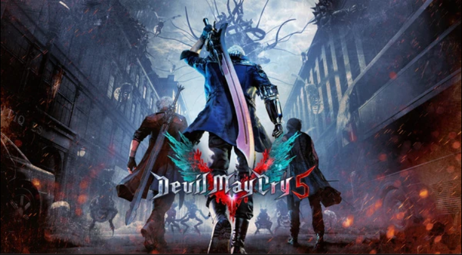
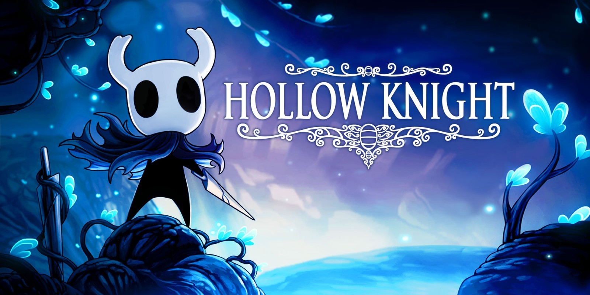
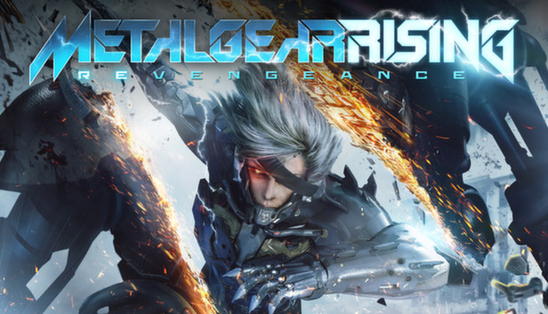
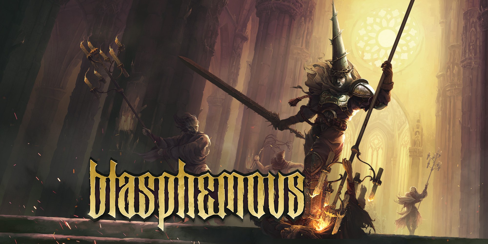
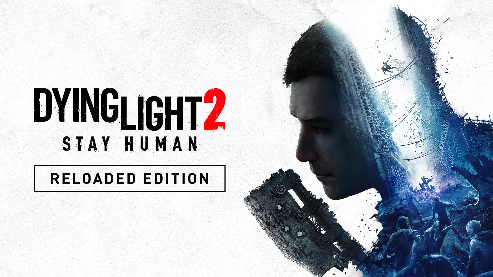
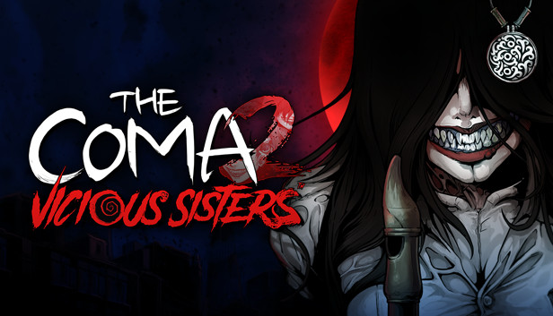

Destacados

Devil May Cry 5
Devil May Cry 5 es un videojuego de acción y aventura hack and slash desarrollado y publicado por Capcom. Lanzado en 2019 para PlayStation 4, Xbox One y Microsoft Windows, y posteriormente en 2020 como Devil May Cry 5 Special Edition para PlayStation 5.
19,99 €
Descuentos y Eventos



Novedades
-

Lies of P:
El juego reimagina el cuento clásico de Pinocho en una ciudad sombría llamada Krat, inspirada en la Belle Époque, donde el jugador asume el papel de una marioneta que busca convertirse en humano. -

Hades:
Hades es un juego roguelike de acción hack and slash que combina la exploración de mazmorras con una narrativa rica y personajes profundos. Los jugadores controlan a Zagreus, el príncipe inmortal del Inframundo. -

Metal Gear Rising:
El protagonista es Raiden, el mismo cyborg de Guns of the Patriots que trabaja para las empresas Maverick PMC con el fin de recaudar dinero para su familia (es decir, su esposa Rosemary, y su hijo John). -

Blasphemous:
Blasphemous es un videojuego de acción y plataformas hack-and-slash de estilo "metroidvania" desarrollado por The Game Kitchen y conocido por su ambientación oscura y brutal -

Persona 5:
En esencia, trata sobre un grupo de “vigilantes” llamado 'The Phantom Thieves' que tienen como objetivo erradicar la maldad de Tokio al cambiar el corazón de personas corruptas. -

Dying Light 2:
Dying Light 2 es un videojuego de mundo abierto en primera persona que se sitúa en un mundo postapocalíptico en el que se ha sido víctima de una epidemia zombi. -

The Coma 2:
The Coma 2: Vicious Sisters es una aventura de terror coreana. Aventúrate para sobrevivir a los horrores de la noche.